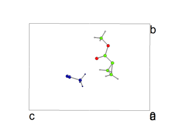

| Allocate a GROUP name to each of the different residues by typing into the text input bar at the bottom of the window. The group names are arbitary. | DEFGROUP g1 FRAG c11 VIEW The atom c11 was selected by clicking on one of the atoms in the chosen residue. |
| Colour each of the different residues in a different colour so that they can be easily recognised in a packed cell. | COLOUR GROUP g1 blue VIEW If a group colour is not chosen, the group retaines the original atom-type colouring. |
| Repeat the above operations for each of the residues. | |
| Click on SHOW CELL from the right hand menu and pack each of the groups separately into the unit cell. | PACK GROUP g1 CELL COMPLETE VIEW COMPLETE indicates that if any
atom in the slected group lies within the cell, the whole group is to be rendered.
An alternative keyword is CENTROID, which only includes groups whose centroid lies within the cell. Pack each of the groups |
| EXAMPLE. Group 1 was coloured blue, group 2 retained the atom-type colouring. |
|
| Begin to prune unwanted residues from the diagram. This can be done either by
EXCLUDING fragments explicitly, or excluding areas by drawing round them. Remember
that when excluding fragments explicity in a diagram viewed along a cell axis,
there may be an exact copy of the excluded fragment hiding behind the one
selected. Use the tools in the right hand menu to view along a chosen axis, or to apply rotations to the image. |
EXCLUDE FRAG atom_clicked_with_mouse VIEW. Clicking on any
atom in the chosen residue will excluse it from the diagram. or Choose EXCL AREA from the menu and draw round the area you want to delete. You will probably want to view down more than one axis when excluding areas. |
| Remove any remaining unwanted fragments and verify that you really do have only one instance or each residue be viewing along each axis in turn. |  |